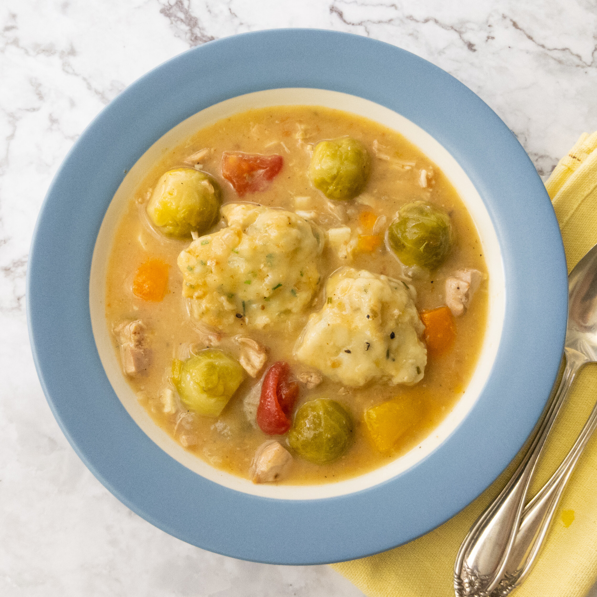

Skybuilder's Stew

Description
“One unfortunate rail was left to stew in its own juices after finding its way into the pot. Literally.”
Ingredients
- butter, divided
- 20 oz boneless, skinless chicken thighs
- 2 cups onion, diced
- ¼ cup all-purpose flour
- 4 cups low/no salt chicken broth
- 4 cups small brussels sprouts
- 2 tsp kosher salt
- 2 tsp freshly ground black pepper
- 2 cups bell pepper, sliced
- 2 cups tomato, diced
- 1 bay leaf
- 3 cloves garlic
Cheesy Dumplings
- 2 cups all-purpose flour
- 2 tsp kosher salt
- 2 tsp baking powder
- ¼ cup chives, finely chopped
- 1 cup Swiss cheese, shredded
- 1 egg
- 1 cup cold water
In a medium bowl, mix all the ingredients until they just barely come together. Do not overmix.
Directions
- Set a large pot over medium heat and melt 2 tbsp/30 g of butter.
- Add the chicken thighs and cook them until they are brown, about 8 minutes per side. Remove the chicken from the pot and set it aside.
- Add the garlic and onions to the pot and cook them until they begin releasing liquid, about 5 minutes. Scrape up any brown bits left behind by the chicken.
- Add the remaining butter, wait for it to melt and then stir in the flour to make a roux. Cook for about 10 minutes until it smells like cooked flour/pie dough.
- Add the chicken broth and stir until there are no lumps of flour.
- Cut the chicken thighs into bite-sized pieces and add them to the pot.
- Add the sprouts, salt, pepper and bay leaf, cover the pot and bring it to a simmer.
- Prepare the dumpling dough by following the instructions below.
- Stir the bell peppers and tomatoes into the stew.
- Taste the stew for seasoning and add salt and pepper as needed.
- Using two spoons, place dollops of dumpling dough on the surface of the stew.
- Cover the pot and cook for 15 minutes. Do not stir.